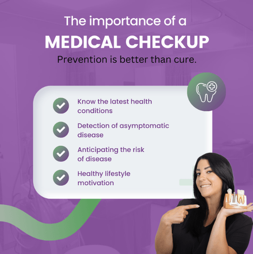
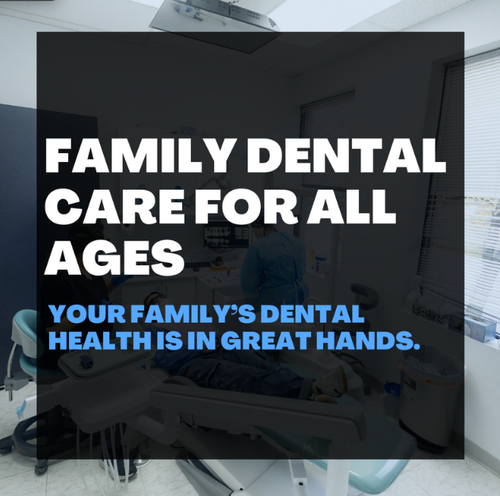

Our work
Real results,
Real results,
real clinics.
From media day content to targeted ad campaigns, we partner with dental and medical clinics to attract more patients and build a standout brand. Take a look — or jump straight to the measurable case studies behind these posts.
Social posts
Posts that
Posts that
get noticed.



Reels
Reels that
Reels that
actually convert.
Ad videos
Ads built
Ads built
to perform.
About our work
Common questions about what we shoot, who owns it, and how we handle patient privacy. Want results like these for your clinic? Start with a discovery call.
Yes. Every image and video on this page was produced by CliniMedia at a real dental or medical clinic in Burlington, Oakville, Mississauga, Hamilton, Milton, or Toronto. Clinic names are anonymised to protect client confidentiality, but the creative, the locations, and the engagement metrics are real. See measurable case studies →
The clinic owns the final deliverables. CliniMedia retains a non-exclusive right to display anonymised excerpts in our portfolio, but the underlying photo and video files are licensed to the clinic for unlimited use across social, ads, web, and print.
Gold-tier clinics get 1 to 3 branded posts per week. Diamond-tier clinics get daily Stories plus 3 to 5 feed/Reels posts per week, sequenced from each media day. See the tier comparison →
Yes. We work with dermatology clinics, orthodontics, optometry, physiotherapy, chiropractic, and general medical clinics. The format is the same — monthly on-site shoots producing photo and video tuned to the practice's specialty and audience.
A typical 15 to 30 second Reel includes an opening hook (first three seconds), a clear single message, real clinic footage (not stock), burned-in captions for sound-off viewing, and a soft call to action like "now booking" or "link in bio". We never shoot inside a patient's mouth — patient privacy outranks every other consideration. Read the full breakdown of a media day →
Every patient who appears in footage signs a written consent form before any camera is turned on. We brief the clinic's front desk on consent paperwork the week before a shoot, and we never shoot patients who decline.